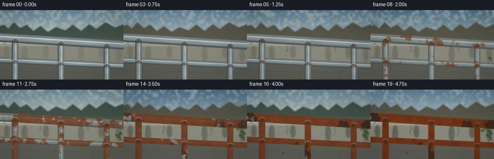
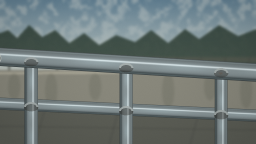
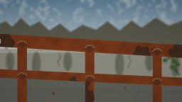
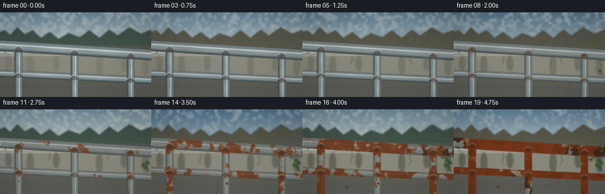

CODING AGENTS AS PIXEL WORLD MODELS
traex/GPT-5.6-Sol · phygen_159
点击播放 · 原生 RGB 像素
逐轮保存的候选
回放视频、检查图与代码变化。
每份候选均可单独播放。实际图片检查记录在下方工具轨迹中。
候选 01播放与检查图
点击播放 · 原生 RGB 像素

展开代码变化
--- 上一保存版本
+++ 本次保存版本
@@ -0,0 +1,229 @@
+from pathlib import Path
+import numpy as np
+import cv2
+from PIL import Image, ImageDraw, ImageFilter
+import artifact_io
+
+# Fixed-camera procedural timelapse. All randomness is seeded and therefore
+# surface defects persist and expand rather than flicker between frames.
+W, H, N = 256, 144, 20
+SS = 3
+w, h = W*SS, H*SS
+rng = np.random.default_rng(159)
+
+
+def fbm(width, height, seed, octaves=5):
+ rr = np.random.default_rng(seed)
+ out = np.zeros((height, width), np.float32)
+ amp = 1.0
+ total = 0.0
+ for k in range(octaves):
+ cw = max(2, width // (2 ** (octaves-k+1)))
+ ch = max(2, height // (2 ** (octaves-k+1)))
+ small = rr.random((ch, cw), dtype=np.float32)
+ layer = cv2.resize(small, (width, height), interpolation=cv2.INTER_CUBIC)
+ out += amp * layer
+ total += amp
+ amp *= .52
+ out /= total
+ out -= out.min()
+ out /= max(1e-6, out.max())
+ return out
+
+fine = fbm(w, h, 1591, 6)
+coarse = fbm(w, h, 1592, 4)
+stain_noise = fbm(w, h, 1593, 5)
+Y, X = np.mgrid[0:h, 0:w].astype(np.float32)
+xf, yf = X/SS, Y/SS
+
+# Persistent corrosion nucleation map. Vertical meanders produce convincing water paths.
+stripe = (np.sin(xf*.51 + np.sin(xf*.073)*2.1) + 1)/2
+seed_field = np.clip(.12 + .56*coarse + .25*fine + .07*stripe, 0, 1)
+# Corrosion begins at welded intersections and along underside seams.
+joints = np.zeros((h, w), np.float32)
+for jx, jy in [(31,62),(31,107),(126,68),(126,111),(221,73),(221,115)]:
+ joints = np.maximum(joints, np.exp(-(((xf-jx)/12)**2 + ((yf-jy)/9)**2)))
+underside = np.exp(-((yf - (66 + .057*(xf-128))) / 7.5)**2) * np.clip((yf-(63+.057*(xf-128)))/8,0,1)
+seed_field = np.clip(seed_field - .28*joints - .10*underside, 0.03, 1)
+
+
+def lerp(a,b,t): return a*(1-t)+b*t
+
+def smoothstep(edge0, edge1, x):
+ q = np.clip((x-edge0)/(edge1-edge0),0,1)
+ return q*q*(3-2*q)
+
+
+def background(age, frame_i):
+ # Seasonal light cycles imply years passing, but geometry is kept locked.
+ season = np.sin(frame_i * 2*np.pi/5.2)
+ storm = np.exp(-((frame_i-7.0)/2.0)**2) + .55*np.exp(-((frame_i-14.0)/1.8)**2)
+ top = np.array([101,132,151.], np.float32) + np.array([12,10,4])*season - np.array([25,23,20])*storm
+ bot = np.array([201,205,195.], np.float32) + np.array([9,6,-2])*season - np.array([30,28,22])*storm
+ arr = np.empty((h,w,3),np.float32)
+ grad = np.clip(yf/80,0,1)[...,None]
+ arr[:] = top*(1-grad)+bot*grad
+ # Soft cloud banks whose movement remains understated.
+ cloud = fbm(w,h,9000+frame_i,3)
+ cloudmask = np.clip((cloud-.48)*1.7,0,.42)[...,None] * np.clip(1-yf[...,None]/90,0,1)
+ arr = arr*(1-cloudmask)+np.array([221,222,214])*cloudmask
+ im = Image.fromarray(np.uint8(np.clip(arr,0,255)), 'RGB')
+ d = ImageDraw.Draw(im, 'RGBA')
+ s=SS
+ # Distant treeline / scrub, deliberately defocused.
+ tree_col=(47,63,53,215) if season>-0.15 else (73,68,52,210)
+ d.polygon([(0,52*s),(0,33*s),(8*s,30*s),(17*s,38*s),(29*s,25*s),(42*s,37*s),
+ (55*s,30*s),(69*s,43*s),(84*s,33*s),(99*s,45*s),(116*s,35*s),
+ (135*s,42*s),(151*s,30*s),(168*s,43*s),(185*s,29*s),(199*s,39*s),
+ (219*s,25*s),(238*s,36*s),(256*s,29*s),(256*s,69*s)], fill=tree_col)
+ # misty railing/fence behind subject for depth
+ d.rectangle((0,57*s,256*s,62*s), fill=(87,91,81,190))
+ for x in range(8,257,24): d.rectangle((x*s,57*s,(x+2)*s,86*s), fill=(76,80,73,160))
+ # weathered concrete retaining wall
+ d.polygon([(0,70*s),(256*s,68*s),(256*s,111*s),(0,107*s)], fill=(137,136,124,255))
+ d.line([(0,73*s),(256*s,71*s)], fill=(211,205,184,170), width=2*s)
+ # broad stains and aging on wall
+ for k,x in enumerate([12,49,93,166,208,244]):
+ ww=(5+(k%3)*3)*s
+ alpha=int(35+80*age)
+ d.ellipse(((x-4)*s,73*s,(x+8)*s,(100+k%2*8)*s), fill=(57,62,49,alpha))
+ if age>.25 and k<5:
+ d.line([(x*s,78*s),((x+(-1)**k*3)*s,(92+8*age)*s)], fill=(71,64,51,int(125*age)), width=max(1,s))
+ # paving in lower field
+ d.polygon([(0,107*s),(256*s,111*s),(256*s,144*s),(0,144*s)], fill=(92,94,86,255))
+ d.line([(0,126*s),(256*s,130*s)], fill=(55,58,54,120), width=s)
+ for x in [45,119,200]: d.line([(x*s,108*s),((x-10)*s,144*s)], fill=(58,61,57,100), width=s)
+ # wall cracks spread with age
+ if age>.18:
+ for x0, y0, bends in [(83,74,[(85,81),(81,87),(84,94)]),(185,73,[(181,80),(184,87),(179,96)]),(26,75,[(29,83),(27,92)])]:
+ upto=max(2,int(len(bends)*min(1,(age-.18)/.5)))
+ pts=[(x0*s,y0*s)]+[(x*s,y*s) for x,y in bends[:upto]]
+ d.line(pts, fill=(52,49,42,155), width=s)
+ # Ivy slowly colonizes the right wall, another long-term cue.
+ if age>.34:
+ grow=np.clip((age-.34)/.66,0,1)
+ trunk=[(252*s,106*s),(246*s,97*s),(249*s,88*s),(239*s,79*s),(242*s,72*s)]
+ count=max(2,int(2+grow*3))
+ d.line(trunk[:count], fill=(46,66,37,220), width=2*s)
+ leaf_positions=[(247,99),(242,95),(251,91),(245,87),(237,82),(250,79),(240,75),(232,85),(253,72)]
+ for n,(lx,ly) in enumerate(leaf_positions[:int(len(leaf_positions)*grow)]):
+ r=(2+n%2)*s
+ d.ellipse((lx*s-r,ly*s-r,lx*s+r,ly*s+r), fill=(49,75+9*(n%2),37,230))
+ # growing orange drainage stains directly under railing joints
+ if age>.20:
+ for sx, sy, length in [(31,107,24),(126,111,20),(221,115,18)]:
+ a=(age-.2)/.8
+ col=(128,64,28,int(80+90*a))
+ d.line([(sx*s,sy*s),((sx+2)*s,(sy+length*a)*s)], fill=col, width=max(1,int(1.5*s)))
+ d.ellipse(((sx-1)*s,(sy+length*a-2)*s,(sx+3)*s,(sy+length*a+2)*s),fill=col)
+ # very subtle date-free fixed-camera vignette
+ im=im.filter(ImageFilter.GaussianBlur(1.1*s))
+ return np.asarray(im).astype(np.float32)
+
+
+def cylinder_layer(x1,y1,x2,y2,r,age,kind=0):
+ # Signed geometry and axis coordinates in high-res coordinates.
+ ax, ay, bx, by = x1*SS,y1*SS,x2*SS,y2*SS
+ vx, vy = bx-ax, by-ay
+ vv=vx*vx+vy*vy
+ u=np.clip(((X-ax)*vx+(Y-ay)*vy)/vv,0,1)
+ cx=ax+u*vx; cy=ay+u*vy
+ signed=((X-cx)*(-vy)+(Y-cy)*vx)/(np.sqrt(vv)+1e-6)
+ dist=np.sqrt((X-cx)**2+(Y-cy)**2)
+ rr=r*SS
+ coverage=np.clip(rr+.8-dist,0,1)[...,None]
+ q=np.clip(signed/rr,-1,1)
+ # Polished steel's banded reflections and bright glint.
+ roundshade=.40+.47*np.sqrt(np.clip(1-q*q,0,1))
+ spec=np.exp(-((q+.28)/.105)**2)
+ darkseam=np.exp(-((q-.82)/.18)**2)
+ base=np.zeros((h,w,3),np.float32)
+ steel=np.array([157,171,174.])
+ base[:]=steel*roundshade[...,None] + 78*spec[...,None] - 43*darkseam[...,None]
+ # long reflected sky/ground bands sell the initial polish
+ band=(.5+.5*np.sin(u*20+kind*1.7))*np.exp(-((q+.05)/.38)**2)
+ base += band[...,None]*np.array([12,15,16])*(1-age)
+ # Oxidation dulls all exposed steel before the orange rust stage.
+ dull=np.array([101,101,91.]) + (fine[...,None]-.5)*20
+ dull_mix=np.clip(age*.47 + smoothstep(.18,.75,age)*.12,0,.62)
+ base=lerp(base,dull,dull_mix)
+ # Rust growth is monotonic: seeds become halos, merge, darken and pit.
+ progress=np.clip((age-.055)/.945,0,1)
+ threshold=.92-progress*.84
+ growth=smoothstep(threshold-.07,threshold+.07,1-seed_field)
+ # global field plus many crisp islands; retain islands at identical locations
+ islands=smoothstep(threshold-.035,threshold+.035,1-(.63*seed_field+.37*fine))
+ rust=np.maximum(growth*.82,islands)
+ rust*=coverage[...,0]
+ # Orange edge, umber center and grainy oxide scale
+ center=smoothstep(.25,.92,rust)
+ rust_rgb=np.empty_like(base)
+ ochre=np.array([184,88,30.]); umber=np.array([91,43,24.])
+ crust=np.clip(.25+.8*coarse+.22*np.sin(xf*2.3+yf*1.1),0,1)[...,None]
+ rust_rgb[:]=lerp(ochre,umber,center[...,None]*.75)
+ rust_rgb=rust_rgb*(.78+.28*crust)
+ base=lerp(base,rust_rgb,np.clip(rust[...,None]*(.35+.65*progress),0,1))
+ # black pinholes emerge late within corroded areas
+ pit_seed=(fine>.79).astype(np.float32)*smoothstep(.46,.86,progress)
+ pit=cv2.dilate(pit_seed,np.ones((2*SS+1,2*SS+1),np.uint8))
+ pit*=smoothstep(.18,.7,rust)
+ base=lerp(base,np.array([41,35,29.]),(pit*.66)[...,None])
+ # narrow edge highlights, disappearing as corrosion advances
+ edge=np.exp(-((np.abs(q)-.88)/.07)**2)[...,None]
+ base += edge*np.array([26,30,30])*(1-age*.8)
+ return np.clip(base,0,255),coverage
+
+
+def composite(dst, src, alpha):
+ return dst*(1-alpha)+src*alpha
+
+
+def render_frame(i):
+ age=i/(N-1)
+ scene=background(age,i)
+ # Gentle exposure changes over seasons, no camera movement.
+ # Rear lower rail, then uprights, then dominant handrail.
+ components=[
+ (-10,103,266,116,6.0,1),
+ (31,61,31,151,6.7,2),
+ (126,66.5,126,151,6.5,3),
+ (221,72,221,151,6.3,4),
+ (-10,56,266,73,9.1,0),
+ ]
+ for x1,y1,x2,y2,r,k in components:
+ surf,alpha=cylinder_layer(x1,y1,x2,y2,r,age,k)
+ scene=composite(scene,surf,alpha)
+ # Weld collars/rings and bolts are sharp foreground features.
+ im=Image.fromarray(np.uint8(np.clip(scene,0,255)),'RGB')
+ ov=Image.new('RGBA',(w,h),(0,0,0,0)); d=ImageDraw.Draw(ov,'RGBA')
+ s=SS
+ rust_amt=np.clip((age-.08)/.92,0,1)
+ for px,py in [(31,62),(126,68),(221,73),(31,107),(126,111),(221,115)]:
+ # collar shadow and specular lip
+ col=tuple(int(v) for v in lerp(np.array([166,174,173.]),np.array([117,62,31.]),rust_amt*.78))+(230,)
+ d.ellipse(((px-7)*s,(py-3)*s,(px+7)*s,(py+4)*s),fill=(45,43,38,100))
+ d.arc(((px-7)*s,(py-5)*s,(px+7)*s,(py+5)*s),185,358,fill=col,width=2*s)
+ if age>.25:
+ rr=(1.2+1.7*rust_amt)*s
+ d.ellipse((px*s-rr,(py+3)*s-rr,px*s+rr,(py+3)*s+rr),fill=(83,38,20,int(180*rust_amt)))
+ # Endcap at left foreground
+ d.ellipse((-13*s,51*s,1*s,65*s),fill=(55,59,58,230),outline=(198,205,201,220),width=s)
+ # A few flakes below severely corroded joins (persistent count rises).
+ if age>.56:
+ flakes=[(32,122),(128,126),(222,130),(75,132),(176,124),(218,139)]
+ for j,(fx,fy) in enumerate(flakes[:int(1+(age-.56)*12)]):
+ rr=(1+j%2)*s
+ d.ellipse((fx*s-rr,fy*s-rr,fx*s+rr,fy*s+rr),fill=(105,50,25,210))
+ im=Image.alpha_composite(im.convert('RGBA'),ov).convert('RGB')
+ # Fine film grain and vignette, consistent with documentary footage.
+ arr=np.asarray(im).astype(np.float32)
+ grain=rng.normal(0,1.05,(h,w,1)).astype(np.float32)
+ vign=1-.13*np.clip(((xf-128)/155)**2+((yf-72)/105)**2,0,1)
+ arr=arr*vign[...,None]+grain
+ # High-quality supersampled reduction to exact output dimensions.
+ out=cv2.resize(np.clip(arr,0,255).astype(np.uint8),(W,H),interpolation=cv2.INTER_AREA)
+ return out
+
+frames=np.stack([render_frame(i) for i in range(N)]).astype(np.uint8)
+artifact_io.save(frames, Path(__file__).resolve().parent)
+print('saved',frames.shape,frames.dtype)
候选 02播放与检查图
点击播放 · 原生 RGB 像素

展开代码变化
--- 上一保存版本
+++ 本次保存版本
@@ -148,8 +148,10 @@
dull_mix=np.clip(age*.47 + smoothstep(.18,.75,age)*.12,0,.62)
base=lerp(base,dull,dull_mix)
# Rust growth is monotonic: seeds become halos, merge, darken and pit.
- progress=np.clip((age-.055)/.945,0,1)
- threshold=.92-progress*.84
+ # Ease-in keeps early tarnish localized, while the higher final threshold
+ # preserves scattered bare-metal remnants even after years of exposure.
+ progress=np.clip((age-.055)/.945,0,1)**1.35
+ threshold=.90-progress*.56
growth=smoothstep(threshold-.07,threshold+.07,1-seed_field)
# global field plus many crisp islands; retain islands at identical locations
islands=smoothstep(threshold-.035,threshold+.035,1-(.63*seed_field+.37*fine))
候选 03播放与检查图

可观测工具轨迹
实际执行的命令与返回图片。
命令 1exit 0
/bin/bash -lc "cat task_spec.json && printf '\\n--- FILES ---\\n' && find . -maxdepth 2 -type f -printf '%p\\n' | sort"
命令 2exit 0
/bin/bash -lc "cat prompt.txt && printf '\\n--- GENERATION_RULES ---\\n' && cat GENERATION_RULES.md"
命令 3exit 0
/bin/bash -lc "which ffmpeg; which python3; python3 - <<'PY'
try:
import cv2; print('cv2',cv2.__version__)
except Exception as e: print('no cv2',e)
try:
import PIL; print('PIL',PIL.__version__)
except Exception as e: print('no PIL',e)
try:
import numpy; print('numpy',numpy.__version__)
except Exception as e: print('no numpy',e)
PY"命令 4exit 0
/bin/bash -lc 'cat artifact_io.py'
命令 5exit 0
/bin/bash -lc "cat > generate.py <<'PY'
from pathlib import Path
import numpy as np
import cv2
from PIL import Image, ImageDraw, ImageFilter
import artifact_io
# Fixed-camera procedural timelapse. All randomness is seeded and therefore
# surface defects persist and expand rather than flicker between frames.
W, H, N = 256, 144, 20
SS = 3
w, h = W*SS, H*SS
rng = np.random.default_rng(159)
def fbm(width, height, seed, octaves=5):
rr = np.random.default_rng(seed)
out = np.zeros((height, width), np.float32)
amp = 1.0
total = 0.0
for k in range(octaves):
cw = max(2, width // (2 ** (octaves-k+1)))
ch = max(2, height // (2 ** (octaves-k+1)))
small = rr.random((ch, cw), dtype=np.float32)
layer = cv2.resize(small, (width, height), interpolation=cv2.INTER_CUBIC)
out += amp * layer
total += amp
amp *= .52
out /= total
out -= out.min()
out /= max(1e-6, out.max())
return out
fine = fbm(w, h, 1591, 6)
coarse = fbm(w, h, 1592, 4)
stain_noise = fbm(w, h, 1593, 5)
Y, X = np.mgrid[0:h, 0:w].astype(np.float32)
xf, yf = X/SS, Y/SS
# Persistent corrosion nucleation map. Vertical meanders produce convincing water paths.
stripe = (np.sin(xf*.51 + np.sin(xf*.073)*2.1) + 1)/2
seed_field = np.clip(.12 + .56*coarse + .25*fine + .07*stripe, 0, 1)
# Corrosion begins at welded intersections and along underside seams.
joints = np.zeros((h, w), np.float32)
for jx, jy in [(31,62),(31,107),(126,68),(126,111),(221,73),(221,115)]:
joints = np.maximum(joints, np.exp(-(((xf-jx)/12)**2 + ((yf-jy)/9)**2)))
underside = np.exp(-((yf - (66 + .057*(xf-128))) / 7.5)**2) * np.clip((yf-(63+.057*(xf-128)))/8,0,1)
seed_field = np.clip(seed_field - .28*joints - .10*underside, 0.03, 1)
def lerp(a,b,t): return a*(1-t)+b*t
def smoothstep(edge0, edge1, x):
q = np.clip((x-edge0)/(edge1-edge0),0,1)
return q*q*(3-2*q)
def background(age, frame_i):
# Seasonal light cycles imply years passing, but geometry is kept locked.
season = np.sin(frame_i * 2*np.pi/5.2)
storm = np.exp(-((frame_i-7.0)/2.0)**2) + .55*np.exp(-((frame_i-14.0)/1.8)**2)
top = np.array([101,132,151.], np.float32) + np.array([12,10,4])*season - np.array([25,23,20])*storm
bot = np.array([201,205,195.], np.float32) + np.array([9,6,-2])*season - np.array([30,28,22])*storm
arr = np.empty((h,w,3),np.float32)
grad = np.clip(yf/80,0,1)[...,None]
arr[:] = top*(1-grad)+bot*grad
# Soft cloud banks whose movement remains understated.
cloud = fbm(w,h,9000+frame_i,3)
cloudmask = np.clip((cloud-.48)*1.7,0,.42)[...,None] * np.clip(1-yf[...,None]/90,0,1)
arr = arr*(1-cloudmask)+np.array([221,222,214])*cloudmask
im = Image.fromarray(np.uint8(np.clip(arr,0,255)), 'RGB')
d = ImageDraw.Draw(im, 'RGBA')
s=SS
# Distant treeline / scrub, deliberately defocused.
tree_col=(47,63,53,215) if season>-0.15 else (73,68,52,210)
d.polygon([(0,52*s),(0,33*s),(8*s,30*s),(17*s,38*s),(29*s,25*s),(42*s,37*s),
(55*s,30*s),(69*s,43*s),(84*s,33*s),(99*s,45*s),(116*s,35*s),
(135*s,42*s),(151*s,30*s),(168*s,43*s),(185*s,29*s),(199*s,39*s),
(219*s,25*s),(238*s,36*s),(256*s,29*s),(256*s,69*s)], fill=tree_col)
# misty railing/fence behind subject for depth
d.rectangle((0,57*s,256*s,62*s), fill=(87,91,81,190))
for x in range(8,257,24): d.rectangle((x*s,57*s,(x+2)*s,86*s), fill=(76,80,73,160))
# weathered concrete retaining wall
d.polygon([(0,70*s),(256*s,68*s),(256*s,111*s),(0,107*s)], fill=(137,136,124,255))
d.line([(0,73*s),(256*s,71*s)], fill=(211,205,184,170), width=2*s)
# broad stains and aging on wall
for k,x in enumerate([12,49,93,166,208,244]):
ww=(5+(k%3)*3)*s
alpha=int(35+80*age)
d.ellipse(((x-4)*s,73*s,(x+8)*s,(100+k%2*8)*s), fill=(57,62,49,alpha))
if age>.25 and k<5:
d.line([(x*s,78*s),((x+(-1)**k*3)*s,(92+8*age)*s)], fill=(71,64,51,int(125*age)), width=max(1,s))
# paving in lower field
d.polygon([(0,107*s),(256*s,111*s),(256*s,144*s),(0,144*s)], fill=(92,94,86,255))
d.line([(0,126*s),(256*s,130*s)], fill=(55,58,54,120), width=s)
for x in [45,119,200]: d.line([(x*s,108*s),((x-10)*s,144*s)], fill=(58,61,57,100), width=s)
# wall cracks spread with age
if age>.18:
for x0, y0, bends in [(83,74,[(85,81),(81,87),(84,94)]),(185,73,[(181,80),(184,87),(179,96)]),(26,75,[(29,83),(27,92)])]:
upto=max(2,int(len(bends)*min(1,(age-.18)/.5)))
pts=[(x0*s,y0*s)]+[(x*s,y*s) for x,y in bends[:upto]]
d.line(pts, fill=(52,49,42,155), width=s)
# Ivy slowly colonizes the right wall, another long-term cue.
if age>.34:
grow=np.clip((age-.34)/.66,0,1)
trunk=[(252*s,106*s),(246*s,97*s),(249*s,88*s),(239*s,79*s),(242*s,72*s)]
count=max(2,int(2+grow*3))
d.line(trunk[:count], fill=(46,66,37,220), width=2*s)
leaf_positions=[(247,99),(242,95),(251,91),(245,87),(237,82),(250,79),(240,75),(232,85),(253,72)]
for n,(lx,ly) in enumerate(leaf_positions[:int(len(leaf_positions)*grow)]):
r=(2+n%2)*s
d.ellipse((lx*s-r,ly*s-r,lx*s+r,ly*s+r), fill=(49,75+9*(n%2),37,230))
# growing orange drainage stains directly under railing joints
if age>.20:
for sx, sy, length in [(31,107,24),(126,111,20),(221,115,18)]:
a=(age-.2)/.8
col=(128,64,28,int(80+90*a))
d.line([(sx*s,sy*s),((sx+2)*s,(sy+length*a)*s)], fill=col, width=max(1,int(1.5*s)))
d.ellipse(((sx-1)*s,(sy+length*a-2)*s,(sx+3)*s,(sy+length*a+2)*s),fill=col)
# very subtle date-free fixed-camera vignette
im=im.filter(ImageFilter.GaussianBlur(1.1*s))
return np.asarray(im).astype(np.float32)
def cylinder_layer(x1,y1,x2,y2,r,age,kind=0):
# Signed geometry and axis coordinates in high-res coordinates.
ax, ay, bx, by = x1*SS,y1*SS,x2*SS,y2*SS
vx, vy = bx-ax, by-ay
vv=vx*vx+vy*vy
u=np.clip(((X-ax)*vx+(Y-ay)*vy)/vv,0,1)
cx=ax+u*vx; cy=ay+u*vy
signed=((X-cx)*(-vy)+(Y-cy)*vx)/(np.sqrt(vv)+1e-6)
dist=np.sqrt((X-cx)**2+(Y-cy)**2)
rr=r*SS
coverage=np.clip(rr+.8-dist,0,1)[...,None]
q=np.clip(signed/rr,-1,1)
# Polished steel's banded reflections and bright glint.
roundshade=.40+.47*np.sqrt(np.clip(1-q*q,0,1))
spec=np.exp(-((q+.28)/.105)**2)
darkseam=np.exp(-((q-.82)/.18)**2)
base=np.zeros((h,w,3),np.float32)
steel=np.array([157,171,174.])
base[:]=steel*roundshade[...,None] + 78*spec[...,None] - 43*darkseam[...,None]
# long reflected sky/ground bands sell the initial polish
band=(.5+.5*np.sin(u*20+kind*1.7))*np.exp(-((q+.05)/.38)**2)
base += band[...,None]*np.array([12,15,16])*(1-age)
# Oxidation dulls all exposed steel before the orange rust stage.
dull=np.array([101,101,91.]) + (fine[...,None]-.5)*20
dull_mix=np.clip(age*.47 + smoothstep(.18,.75,age)*.12,0,.62)
base=lerp(base,dull,dull_mix)
# Rust growth is monotonic: seeds become halos, merge, darken and pit.
progress=np.clip((age-.055)/.945,0,1)
threshold=.92-progress*.84
growth=smoothstep(threshold-.07,threshold+.07,1-seed_field)
# global field plus many crisp islands; retain islands at identical locations
islands=smoothstep(threshold-.035,threshold+.035,1-(.63*seed_field+.37*fine))
rust=np.maximum(growth*.82,islands)
rust*=coverage[...,0]
# Orange edge, umber center and grainy oxide scale
center=smoothstep(.25,.92,rust)
rust_rgb=np.empty_like(base)
ochre=np.array([184,88,30.]); umber=np.array([91,43,24.])
crust=np.clip(.25+.8*coarse+.22*np.sin(xf*2.3+yf*1.1),0,1)[...,None]
rust_rgb[:]=lerp(ochre,umber,center[...,None]*.75)
rust_rgb=rust_rgb*(.78+.28*crust)
base=lerp(base,rust_rgb,np.clip(rust[...,None]*(.35+.65*progress),0,1))
# black pinholes emerge late within corroded areas
pit_seed=(fine>.79).astype(np.float32)*smoothstep(.46,.86,progress)
pit=cv2.dilate(pit_seed,np.ones((2*SS+1,2*SS+1),np.uint8))
pit*=smoothstep(.18,.7,rust)
base=lerp(base,np.array([41,35,29.]),(pit*.66)[...,None])
# narrow edge highlights, disappearing as corrosion advances
edge=np.exp(-((np.abs(q)-.88)/.07)**2)[...,None]
base += edge*np.array([26,30,30])*(1-age*.8)
return np.clip(base,0,255),coverage
def composite(dst, src, alpha):
return dst*(1-alpha)+src*alpha
def render_frame(i):
age=i/(N-1)
scene=background(age,i)
# Gentle exposure changes over seasons, no camera movement.
# Rear lower rail, then uprights, then dominant handrail.
components=[
(-10,103,266,116,6.0,1),
(31,61,31,151,6.7,2),
(126,66.5,126,151,6.5,3),
(221,72,221,151,6.3,4),
(-10,56,266,73,9.1,0),
]
for x1,y1,x2,y2,r,k in components:
surf,alpha=cylinder_layer(x1,y1,x2,y2,r,age,k)
scene=composite(scene,surf,alpha)
# Weld collars/rings and bolts are sharp foreground features.
im=Image.fromarray(np.uint8(np.clip(scene,0,255)),'RGB')
ov=Image.new('RGBA',(w,h),(0,0,0,0)); d=ImageDraw.Draw(ov,'RGBA')
s=SS
rust_amt=np.clip((age-.08)/.92,0,1)
for px,py in [(31,62),(126,68),(221,73),(31,107),(126,111),(221,115)]:
# collar shadow and specular lip
col=tuple(int(v) for v in lerp(np.array([166,174,173.]),np.array([117,62,31.]),rust_amt*.78))+(230,)
d.ellipse(((px-7)*s,(py-3)*s,(px+7)*s,(py+4)*s),fill=(45,43,38,100))
d.arc(((px-7)*s,(py-5)*s,(px+7)*s,(py+5)*s),185,358,fill=col,width=2*s)
if age>.25:
rr=(1.2+1.7*rust_amt)*s
d.ellipse((px*s-rr,(py+3)*s-rr,px*s+rr,(py+3)*s+rr),fill=(83,38,20,int(180*rust_amt)))
# Endcap at left foreground
d.ellipse((-13*s,51*s,1*s,65*s),fill=(55,59,58,230),outline=(198,205,201,220),width=s)
# A few flakes below severely corroded joins (persistent count rises).
if age>.56:
flakes=[(32,122),(128,126),(222,130),(75,132),(176,124),(218,139)]
for j,(fx,fy) in enumerate(flakes[:int(1+(age-.56)*12)]):
rr=(1+j%2)*s
d.ellipse((fx*s-rr,fy*s-rr,fx*s+rr,fy*s+rr),fill=(105,50,25,210))
im=Image.alpha_composite(im.convert('RGBA'),ov).convert('RGB')
# Fine film grain and vignette, consistent with documentary footage.
arr=np.asarray(im).astype(np.float32)
grain=rng.normal(0,1.05,(h,w,1)).astype(np.float32)
vign=1-.13*np.clip(((xf-128)/155)**2+((yf-72)/105)**2,0,1)
arr=arr*vign[...,None]+grain
# High-quality supersampled reduction to exact output dimensions.
out=cv2.resize(np.clip(arr,0,255).astype(np.uint8),(W,H),interpolation=cv2.INTER_AREA)
return out
frames=np.stack([render_frame(i) for i in range(N)]).astype(np.uint8)
artifact_io.save(frames, Path(__file__).resolve().parent)
print('saved',frames.shape,frames.dtype)
PY
python3 generate.py
ls -lh pixels.npz inspection.png index.html frames/00.png frames/19.png"命令 6exit 0
/bin/bash -lc "python3 generate.py && python3 - <<'PY'
from pathlib import Path
import json, numpy as np
from PIL import Image
spec=json.loads(Path('task_spec.json').read_text())
z=np.load('pixels.npz')['pixels']
assert z.shape==(spec['height'],spec['width'],spec['frames'])
fs=sorted(Path('frames').glob('*.png'))
assert len(fs)==spec['frames']
for p in fs:
im=Image.open(p)
assert im.mode=='RGB' and im.size==(spec['width'],spec['height'])
# Verify meaningful, evolving output rather than duplicates.
a=np.stack([np.asarray(Image.open(p),dtype=np.int16) for p in fs])
d=np.mean(np.abs(np.diff(a,axis=0)),axis=(1,2,3))
print('validated RGB frames:',len(fs),'size:',Image.open(fs[0]).size)
print('adjacent mean absolute deltas:',np.round(d,2).tolist())
print('endpoint delta:',round(float(np.mean(np.abs(a[-1]-a[0]))),2))
PY"视觉工具实际返回图片 1

视觉工具实际返回图片 2

视觉工具实际返回图片 3

视觉工具实际返回图片 4

保存候选 3 份；完成命令 6 次；可验证图片返回 4 张。原始 API 响应与完整日志保留在本地。